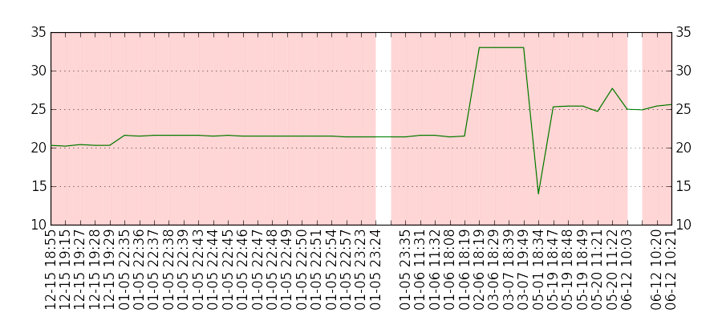
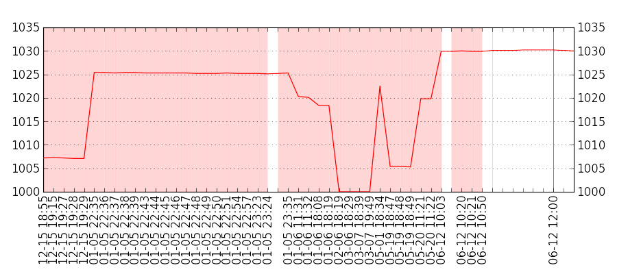
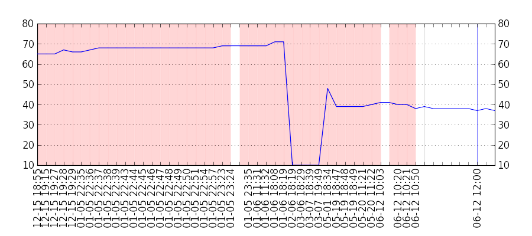

0
0
0
-.-
▼ Status:
unknown
▼
no messages
Aktuální hodnoty
O projektu
Kontakt
vývoj teploty (°C)

vývoj tlaku (hPa)

vývoj vlhkosti (%)

Informace v hlavičce jsou obnovovány každou minutu. Grafy jsou aktualizovány každých 10 minut. Červeně označené oblasti indikují vynechaná měření.